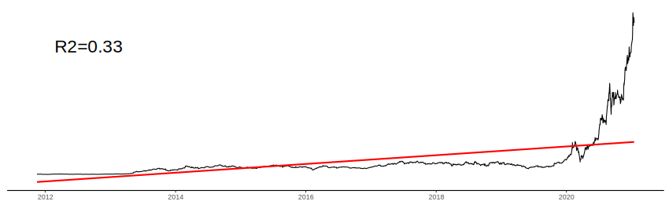
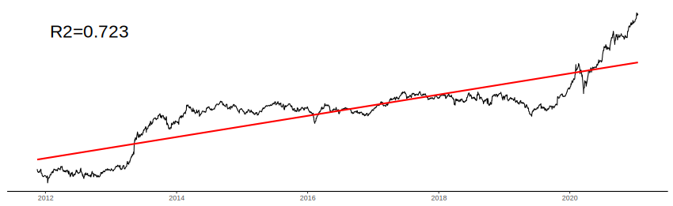
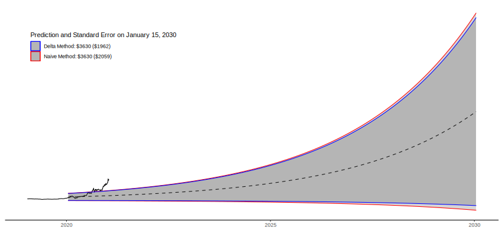

When you are performing analysis in one measurement unit (e.g. the natural log of dollars) but want to convert back to a more interpretable unit (e.g. dollars), then you must take care to correctly transform your standard errors. If you aren't using the delta method to transform your standard errors, chances are you're reporting incorrect standard errors.
Example: Why transform?
⚠️ Disclaimer: The following models are both terrible and should not be taken as financial advice.
Here's an apparently now canonical example for data transformations. Tesla share price. Suppose we want to predict Tesla's share price in year 2030 using a simple linear model. If we were to regress Tesla share price measured in dollars on dates ranging from November 16, 2011 through January 15, 2021, then the predicted share price on January 15, 2030 would be $393.74—less than half the current price (data from Yahoo! Finance).
TSLA Measured in Dollars
If instead we used the transformation \(f(x)=\log(x)\) to transform dollars into log-dollars, then regressed log-dollars on the same dates, then the predicted share price on January 15, 2030 would be 8.198 log-dollars ($3,632.76)—more than four times the current price.
TSLA Measured in log(dollars)
Example: When do I transform standard errors?
Tesla share price is volatile, so we want to put standard errors around the predicted share price in 2030 to express our uncertainty. Assuming we use the linear model where we pre-transform the share price into log-dollars, then the predicted price is 8.198 log-dollars and the prediction standard error is 0.541 log-dollars. These values mean nothing to me, so we convert them into dollars.
The estimate is easy enough convert, just apply the inverse of the transformation to the estimate in log dollars. In this case the inverse of \(\log(x)\) is \(e^x\) so \(e^{8.198}=\) $3,632.76 is our predicted share price in dollars. Transforming the standard errors into dollars isn't so simple, and it's easy to convert them incorrectly.
The Wrong Way to Transform Standard Errors
Suppose \(f: X \to Y\) is the transformation you are using to convert hard-to-interpret units of \(X\) into easy-to-interpret units of \(Y\). Suppose you have an estimator \(\hat{\mu}_n\) and corresponding standard error \(\hat{\sigma}_{\hat{\mu}_n}\) both of which are measured in units of \(X\) using a sample of size \(n\). To make \(\hat{\mu}_n\) easier to interpret, simply report \(f(\hat{\mu}_n)\) instead of \(\hat{\mu}_n\).
In the Tesla share price example, \(\hat{\mu}_n=8.198\), \(\hat{\sigma}_{\hat{\mu}_n}=0.541\), and \(f(\hat{\mu}_n)=\) $3,632.76
I've seen people attempt to convert standard errors by first constructing a standard confidence interval in the untransformed units, \([\hat{\mu}_n - z_\alpha\hat{\sigma}_{\hat{\mu}_n},\ \hat{\mu}_n + z_\alpha\hat{\sigma}_{\hat{\mu}_n}]\), and setting the normal critical value \(z_\alpha\) to 1. By setting the critical value to 1, the confidence interval has approximate coverage of 32%.
Next, individuals will note that this confidence interval has length \(2\hat{\sigma}_{\hat{\mu}_n}\), so they will transform the upper and lower bounds of the confidence interval to the interpretable units: \[ [f(\hat{\mu}_n - \hat{\sigma}_{\hat{\mu}_n}),\ f(\hat{\mu}_n + z_\alpha\hat{\sigma}_{\hat{\mu}_n})] \] and then divide the transformed confidence interval by two to (incorrectly) calculate the transformed standard error: \[ \hat{\sigma}_{f(\hat{\mu}_n)}^{\text{WRONG}} = \frac{f(\hat{\mu}_n - \hat{\sigma}_{\hat{\mu}_n})-f(\hat{\mu}_n + z_\alpha\hat{\sigma}_{\hat{\mu}_n})}{2} \]
A cause of this problem is that the focus is placed on transforming the standard error of \(\hat{\mu}_n\) instead of finding the standard error of \(f(\hat{\mu}_n)\). In other words, the right way of transforming standard errors is to directly estimate \(\hat{\sigma}_{\hat{f(\hat{\mu}_n)}}\).
The Right Way to Transform Standard Errors
If your transformation \(f\) is non-linear (e.g. \(f(x)=e^x\)) then you should use the delta method to transform your standard errors. The delta method is a statistical result that states that if the derivative of \(f\) is continuous, and there is a sequence of random variables \(\hat{\mu}_n\) that converge to a normal distribution \[ \sqrt{n}(\hat{\mu}_n - \mu) \rightarrow N(0, \sigma^2) \] then \[ \sqrt{n}(f(\hat{\mu}_n) - f(\mu)) \rightarrow N(0, (f'(\mu)\sigma)^2) \] So the plug-in estimator for \(\sigma_{f(\hat{\mu}_n)}\) is \(f'(\hat{\mu}_n)\hat{\sigma}_{\hat{\mu}_n}\)
Not only is this method pretty easy to, but the same proof that shows that \(\hat{\sigma}_{f(\hat{\mu}_n)}^{\text{delta}}\) is consistent shows that \(\hat{\sigma}_{f(\hat{\mu}_n)}^{\text{WRONG}}\) is inconsistent (and therefore shouldn't be used).
Alternatively, if you can't calculate the derivative of \(f\), then you can estimate \(f'(\hat{\mu}_n)\) using finite differences: \[ f'(\hat{\mu}_n) = \frac{f(\hat{\mu}_n + \epsilon) - f(\hat{\mu}_n - \epsilon)}{2\epsilon} \] which, by the mean value theorem, will converge to the actual value of the derivative.
If finite differences proves too difficult, or you have reason to believe that the central limit theorem won't kick in for the delta method to be a good approximation, then the best (though more time-consuming) method is then to construct bootstrap standard errors. This is achieved by creating \(B\) bootstrap samples in the untransformed units, estimating \(\hat{\mu}_n^{(1)}, \ldots,\hat{\mu}_n^{(B)}\), transforming all of these estimates, then calculating the standard error of \(f(\hat{\mu}_n^{(1)}), \ldots,f(\hat{\mu}_n^{(B)})\).
A Broken Clock is Right Twice a Day
If, however, \(f\) is an affine transformation of the form \(f(x)=a + bx\) for some constants \(a\) and \(b\) then the wrong method of transforming standard errors will happen to perfectly line up with the delta method.
An example of when the wrong method happens to produce the correct results is if instead of transforming dollars into log-dollars intially, you instead transformed dollars into 1000s of dollars (i.e. \(f^{-1}(y)=y/1000\)) performed the analysis in units of 1000s of dollars, then transformed your estimate and standard error back to regular dollars (i.e. \(f(x)=1000x\))
Example: What Difference Does it Make?
In many applications, using the wrong method won't cause too many problems because the assumption required to use the delta method (\(f'\) is continuous) is essentially stating that \(f\) is locally affine.
In the Tesla share price example, there is a small differnce in the standard error on the predicted share price in 2030. In the example below, the transformed-to-dollars predicted share price from the linear model is plotted with the dashed line. The 95% prediction interval using the naive method is displayed as the gray band with red outlines. The 95% prediction interval using the delta method is displayed as the gray band with blue outlines.
TSLA Prediction, Measured in Dollars
In this example, the delta method produces a smaller standard error, $1,962 relative to $2,059 using the naive method. A difference of a little over 4%. While such a difference is not significant in this setting, differences can baloon when \(f\) is highly non-linear or the untransformed standard errors are large.